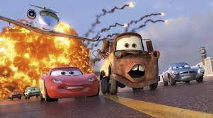
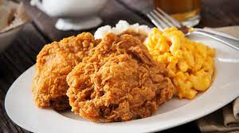
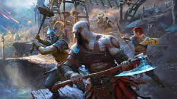

Basketball is a thrilling and dynamic sport that captivates fans around the world. The game involves two teams of five players each, who strive to score points by shooting the ball through the opposing team's hoop. It requires a unique combination of physical prowess, skillful coordination, and strategic thinking. Basketball is renowned for its fast-paced action, with players dribbling, passing, and shooting in a relentless display of athleticism. The sport demands teamwork and communication, as players must work cohesively to outwit their opponents and execute intricate plays. From high-flying dunks to pinpoint three-point shots, basketball offers a spectacular display of individual talent and collective effort. With its rich history, iconic players, and global appeal, basketball has become more than just a game—it's a cultural phenomenon that continues to inspire and unite people of all ages and backgrounds. I love it because it provides pure entertainment while also giving the players exercise and stimulation.
My Favorite Show
One Piece is an extraordinary anime that captivates audiences with its richly woven narrative and breathtaking world-building. The story revolves around the charismatic and rubber-bodied protagonist, Monkey D. Luffy, as he embarks on an ambitious quest to become the Pirate King. Along the way, Luffy assembles a diverse and endearing crew of individuals with their own dreams and unique abilities, forming the Straw Hat Pirates. Together, they navigate treacherous seas, encounter formidable foes, and explore captivating islands while unraveling the mysteries of the Grand Line. With its blend of humor, action, and heartfelt moments, One Piece immerses viewers in a grand adventure that explores themes of friendship, determination, and the pursuit of dreams, cementing its status as an anime masterpiece.
Arc
Episode Range
Romance Dawn
1-3
Orange Town
4-8
Syrup Village
9-18
Baratie
19-30
Arlong Park
31-44
Loguetown
45-53
Buggy's Crew Adventure Chronicles
46-47
Warship Island Arc
54-61
Reverse Mountain
62-63
Whisky Peak
64-67
Diary of Koby-Meppo
68-69
Little Garden
70-77
Drum Island
78-91
Arabasta
92-130
Post Arabasta
131-135
Goat Island
136-138
Ruluka Island
139-143
Jaya
144-152
Skypiea
153-195
G-8
196-206
Long Ring Long Land
207-219
Ocean's Dream
220-224
Foxy's Return
225-228
Water 7
229-263
Enies Lobby
264-312
Boss Luffy Historical Special
291-292, 303, 406-407
Post Enies Lobby
313-325
Ice Hunter
326-335
Chopper Man Special
336
Thriller Bark
337-381
Spa Island
382-384
Sabaody Archipelago
385-405
Amazon Lily
408-417
Straw Hat's Separation Serial
418-421, 453-456
Impel Down
422-425, 430-452
Little East Blue
426-429
Marineford
457-489
Post-War
490-491, 493-516
Toriko Crossover
492
Return to Sabaody
517-522
Fish-Man Island
523-541, 543-574
Toriko Crossover
542
Z's Ambition
575-578
Punk Hazard
579-589, 591-625
Toriko & Dragon Ball Crossover
590
Caesar Retrieval
626-628
Dressrosa
629-746
Silver Mine
747-750
Zou
751-779
Marine Rookie
780-782
Whole Cake Island
783-877
Levely
878-889
Wano Country
890-894, 897-906, 908-1028, 1031-TBA
Cidre Guild
895-896
Anime 20th Anniversary special
907
Uta's Past
1029-1030
Egghead
TBA
My Favorite Movie

If you've ever experienced a "Cars" movie, you're likely aware of the remarkable appeal and greatness of the franchise. The "Cars" series, produced by Pixar Animation Studios, takes us on an enchanting journey into a world inhabited by anthropomorphic vehicles. Led by the spirited racecar Lightning McQueen, the films delve into themes of friendship, self-discovery, and the power of perseverance. The vibrant and intricately designed world of Radiator Springs, with its charming characters and picturesque landscapes, serves as a backdrop for thrilling races and heartfelt moments. The "Cars" franchise has captured the hearts of audiences young and old, thanks to its well-crafted storytelling, visually stunning animation, and the endearing charm of its beloved characters. From Lightning McQueen's exhilarating adventures on the race track to his personal growth and realization of the importance of genuine connections, the "Cars" movies continue to inspire and entertain, solidifying their status as a beloved and enduring franchise.
My Favorite Food

Macoroni and Cheese with Fried Chicken is an irresistible culinary delight that brings immense satisfaction to countless individuals on a daily basis. This mouthwatering combination merges the creamy comfort of macaroni and cheese with the crispy, savory goodness of fried chicken. The creamy, cheesy pasta complements the tender, seasoned chicken, creating a harmonious blend of flavors and textures. The rich and indulgent mac and cheese perfectly balances the crispy exterior and juicy interior of the fried chicken, resulting in a truly delectable dish that tantalizes taste buds and leaves people craving for more. It's a comforting and soulful meal that has gained immense popularity, becoming a go-to choice for both casual gatherings and special occasions. Whether enjoyed as a hearty family dinner or as a decadent treat, Mac and Cheese with Fried Chicken is a culinary sensation that continues to win the hearts and palates of millions around the world.
Strawberry Cheesecake holds a special place in my heart as my all-time favorite dessert. Its luscious combination of flavors and textures makes every bite a delightful experience. The creamy, velvety cheesecake filling provides the perfect balance of richness and tanginess, while the buttery graham cracker crust adds a satisfying crunch. However, what truly elevates this dessert to the next level is the burst of freshness and sweetness that comes from the juicy, ruby-red strawberries on top. Their vibrant color and natural sweetness complement the creamy cheesecake, creating a harmonious blend of flavors that dances on the palate. The smooth, melt-in-your-mouth sensation of the cheesecake coupled with the juicy, refreshing burst of strawberries creates a symphony of taste sensations that never fails to leave me craving more. Whether it's enjoyed on a special occasion or as a comforting treat at the end of a long day, Strawberry Cheesecake always manages to bring a smile to my face and leave me feeling utterly satisfied. Its divine combination of flavors and the sheer indulgence it provides make it the dessert that I simply cannot resist.
My Favorite Game

God of War is an unparalleled gaming masterpiece that has revolutionized the action-adventure genre. Developed by Santa Monica Studio and published by Sony Interactive Entertainment, this iconic franchise has captivated millions with its relentless combat, stunning visuals, and immersive storytelling. From its epic battles against Greek gods to its introspective journey through Norse mythology, God of War delivers an unparalleled gaming experience, pushing the boundaries of storytelling and gameplay. With its cinematic presentation, emotional depth, and awe-inspiring moments, God of War stands as a testament to the power of video games, solidifying its place as a true legend in the gaming world.